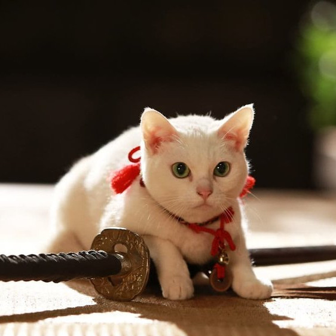

Only the masters kittens may survive at such level of training.
The internet is littered with varying opinions on nutritional paradigms, from catnip paleo to hairball cleanses. But let's turn our attention to an often overlooked fitness fuel, and examine the protein-carb-NOM trifecta that is lasagna...
Defeating your Foe: the Red Dot is Ours!

The Last Ninja Cat Sensei
Felines the world over have been waging war on the most persistent of foes. This red nemesis combines both cunning stealth and lightning speed. But chin up, fellow fighters, our time for victory may soon be near...
A sound clip of Ninja's cat techniques in action!
Is Chuck Norris a Cat Person?
Poor dog, poor dog.
Chuck Norris is widely regarded as the premier martial artist on the planet, and it's a complete coincidence anyone who disagrees with this fact mysteriously disappears soon after. But the real question is, is he a cat person?...